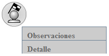
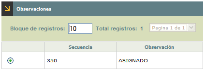
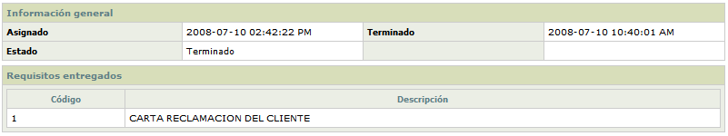

Histórico de Reclamos
Estado de actividades: Cuando el actor invoque este formulario, el sistema mostrará el flujo de actividades correspondientes al tipo de reclamo seleccionado, las cuales se cancelaron o terminaron para poder finalizar completamente el reclamo.
Cuando se utiliza esta opción, se despliega un formulario con el ciclo de actividades, el cual cuenta con un botón para devolverse a la opción principal Histórico de reclamos.
Las actividades que se despliegan pueden tener únicamente los siguientes estados:
|
|
Canceladas: Indica que la actividad se canceló a través de la opción Atención de reclamos o Maestro de reclamos. |
|
Terminadas: Indica que la actividad se finalizó correctamente a través de la opción Atención de reclamos o Maestro de reclamos. |
Cuando el usuario utiliza el click izquierdo del mouse sobre las actividades, se pueden desplegar dos opciones diferentes:

Observaciones: Esta opción permite consultar las observaciones del reclamo correspondiente en el momento de ser cancelado o terminado y cuenta con un botón que permite devolverse a la gráfica completa de las actividades.

Detalle: Si el usuario invoca la opción Detalle se despliega el siguiente formulario el cual contendrá la información detallada de la actividad y su trámite.
